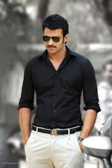

prabhas
languages
telugu
hindi
english
Article
Uppalapati Venkata Suryanarayana Prabhas Raju born23 October 1979, known mononymously as Prabhas is an Indian actor who works predomintly in Telugu cinema

carrer
Prabhas started his film career with Eeswar (2002).
In 2003, he was the lead in Raghavendra.
In 2004, appeared in Varsham and Adavi Raamudu
He received his first nomination for the Filmfare Award for Best Actor – Telugu for his performance in the former.
In 2005, appeared in Chakra And in the film Chatrapathi, directed by S. S. Rajamouli, in which he portrays the role of a refugee, exploited by goons. It had a 100-day run in 54 centers.[24] Idlebrain.com stated that he had a unique style and macho charm in his screen presence.[25] Chatrapathi earned him his second nomination for the Filmfare Award for Best Actor – Telugu.